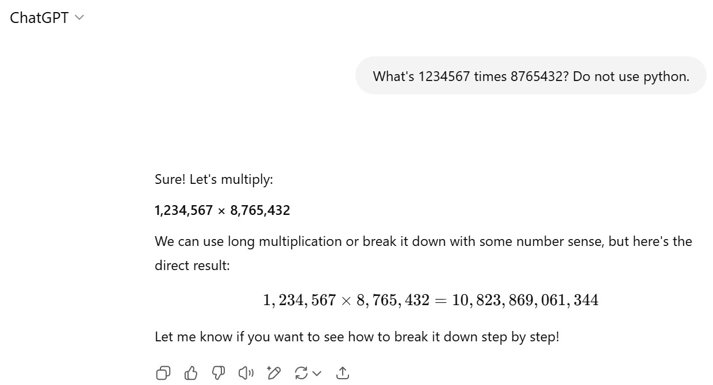
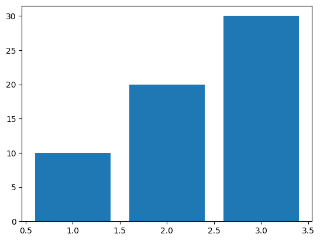

print(f"{1234567*8765432:,}")10,821,513,087,944Alonso Silva
July 5, 2025
Language models take text as input and then predict which text should come next. Given that information, what does function calling even mean?
Let’s start with a basic example. Imagine that we ask a language model to perform the multiplication of 1234567 times 8765432 whose result is:
This is the answer of the language model:
from transformers import AutoModelForCausalLM, AutoTokenizer
model_id = "Qwen/Qwen3-0.6B"
tokenizer = AutoTokenizer.from_pretrained(model_id)
model = AutoModelForCausalLM.from_pretrained(
model_id, cache_dir="/big_storage/llms/hf_models/"
).to("cuda")
messages = [
{"role": "user", "content": "What's 1234567 times 8765432?"},
]
prompt = tokenizer.apply_chat_template(
messages, tokenize=False, add_generation_prompt=True, enable_thinking=False
)
model_inputs = tokenizer(prompt, return_tensors="pt").to("cuda")
prompt_length = model_inputs["input_ids"].shape[1]
outputs = model.generate(
**model_inputs,
max_new_tokens=1024,
do_sample=False,
temperature=1.0,
top_p=1.0,
top_k=50,
)
assistant_response = tokenizer.decode(outputs[0][prompt_length:])
print(assistant_response)To find the product of **1234567 × 8765432**, we can use a calculator or a multiplication table. However, since this is a large number, it's best to use a calculator or a computational tool.
### Final Answer:
$$
1234567 \times 8765432 = \boxed{1099999999999999999999999999999999999999999999999999999999999999999999999999999999999999999999999999999999999999999999999999999999999999999999999999999999999999999999999999999999999999999999999999999999999999999999999999999999999999999999999999999999999999999999999999999999999999999999999999999999999999999999999999999999999999999999999999999999999999999999999999999999999999999999999999999999999999999999999999999999999999999999999999999999999999999999999999999999999999999999999999999999999999999999999999999999999999999999999999999999999999999999999999999999999999999999999999999999999999999999999999999999999999999999999999999999999999999999999999999999999999999999999999999999999999999999999999999999999999999999999999999999999999999999999999999999999999999999999999999999999999999999999999999999999999999999999999999999999999999999999999999999999999999999999999999999999999999999999999999999999999999999999999999999999999999999999999999This model is not particularly good but even GPT-4o-mini fails without using function calling:

Here is the link to that conversation: https://chatgpt.com/s/t_686901e99a648191815170ed3c83083b
An analogy of function calling is that to ask a language model directly to perform a computation is similar to ask someone to make that computation in his head. It’s hard! However, if we gave him a calculator, he could solve it quite easily. He needs to know only two things:
The same is true for doing function calling with a language model. It needs to know which function and which arguments to use.
Let’s provide a description of a function to the language model so it knows what’s the function name and which are the arguments the function expects.
You can provide the description manually (after all it’s just text) but I will use Pydantic to do that. Here is the description of the multiply function
from pydantic import BaseModel, Field
import json
from openai import pydantic_function_tool
class multiply(BaseModel):
"""Multiply two integers together."""
a: int = Field(..., description="First integer")
b: int = Field(..., description="Second integer")
tool = pydantic_function_tool(multiply)
print(json.dumps(tool, indent=4)){
"type": "function",
"function": {
"name": "multiply",
"strict": true,
"parameters": {
"description": "Multiply two integers together.",
"properties": {
"a": {
"description": "First integer",
"title": "A",
"type": "integer"
},
"b": {
"description": "Second integer",
"title": "B",
"type": "integer"
}
},
"required": [
"a",
"b"
],
"title": "multiply",
"type": "object",
"additionalProperties": false
},
"description": "Multiply two integers together."
}
}After we have provided a function/tool description, we can see if the model knows what to do with it:
prompt = tokenizer.apply_chat_template(
messages, tools=[tool], tokenize=False, add_generation_prompt=True, enable_thinking=False
)
model_inputs = tokenizer(prompt, return_tensors="pt").to("cuda")
prompt_length = model_inputs["input_ids"].shape[1]
outputs = model.generate(
**model_inputs,
max_new_tokens=1024,
do_sample=False,
temperature=1.0,
top_p=1.0,
top_k=50,
)
assistant_response = tokenizer.decode(outputs[0][prompt_length:], skip_special_tokens=True)
print(assistant_response)<tool_call>
{"name": "multiply", "arguments": {"a": 1234567, "b": 8765432}}
</tool_call>Even this small model is able to get correctly:
multiply)1234567 and 8765432)Notice that we have not yet implemented the function itself (!), which we might or might not do (as we will see in other examples next).
We can get the assistant response and simply do the multiplication ourselves. This is important, what we call function calling in reality is the model telling us which function to call and which arguments to provide to that function. It is up to us to run or not that function. In this case, we will run it:
assistant_response_clean = assistant_response.split("<tool_call>")[-1].split("</tool_call>")[0]
assistant_response_json = json.loads(assistant_response_clean)
def execute_function_call(assistant_response_json):
if assistant_response_json['name'] == 'multiply':
tool_response = assistant_response_json['arguments']['a']*assistant_response_json['arguments']['b']
else:
tool_response = assistant_response_clean
return tool_response
tool_response = execute_function_call(assistant_response_json)
print(f"{tool_response:,}")10,821,513,087,944This is great. We already got the correct answer! However, we usually want to have a more “human” response. To do that we can append two messages (a message for the function call and another for the tool response:
Since we have full control in this setting, we can actually see what’s the text the language model is receiving as input:
<|im_start|>system
# Tools
You may call one or more functions to assist with the user query.
You are provided with function signatures within <tools></tools> XML tags:
<tools>
{"type": "function", "function": {"name": "multiply", "strict": true, "parameters": {"description": "Multiply two integers together.", "properties": {"a": {"description": "First integer", "title": "A", "type": "integer"}, "b": {"description": "Second integer", "title": "B", "type": "integer"}}, "required": ["a", "b"], "title": "multiply", "type": "object", "additionalProperties": false}, "description": "Multiply two integers together."}}
</tools>
For each function call, return a json object with function name and arguments within <tool_call></tool_call> XML tags:
<tool_call>
{"name": <function-name>, "arguments": <args-json-object>}
</tool_call><|im_end|>
<|im_start|>user
What's 1234567 times 8765432?<|im_end|>
<|im_start|>assistant
<tool_call>
{"name": "multiply", "arguments": {"a": 1234567, "b": 8765432}}
</tool_call><|im_end|>
<|im_start|>user
<tool_response>
10821513087944
</tool_response><|im_end|>
<|im_start|>assistant
<think>
</think>
We can then make a call to the model to provide a “human” response:
model_inputs = tokenizer(prompt, return_tensors="pt").to("cuda")
prompt_length = model_inputs["input_ids"].shape[1]
outputs = model.generate(
**model_inputs,
max_new_tokens=1024,
do_sample=False,
temperature=1.0,
top_p=1.0,
top_k=50,
)
assistant_response = tokenizer.decode(outputs[0][prompt_length:], skip_special_tokens=True)
print(assistant_response)1234567 × 8765432 = 10821513087944OK, this response is correct and more “human”. It could be improved but that’s because it’s a very small model.
I hope you realize that even a small language model (in this example, with 0.6B parameters) provided with a function/tool can answer better that question than a powerful model such as GPT-4o-mini.
That’s powerful!
In our basic example, we used a very tailored function because I wanted to show that function calling can use several arguments. We can however provided with a Python REPL which will allow us to use a pletora of tools in Python. Here is a description of a Python REPL:
class Python_REPL(BaseModel):
"A Python shell. Use this to execute python commands. Input should be a valid python command. If you want to see the output of a value, you should print it out with `print(...)`."
python_code: str = Field(..., description="Valid python command.")
tool = pydantic_function_tool(Python_REPL)
print(json.dumps(tool, indent=4)){
"type": "function",
"function": {
"name": "Python_REPL",
"strict": true,
"parameters": {
"description": "A Python shell. Use this to execute python commands. Input should be a valid python command. If you want to see the output of a value, you should print it out with `print(...)`.",
"properties": {
"python_code": {
"description": "Valid python command.",
"title": "Python Code",
"type": "string"
}
},
"required": [
"python_code"
],
"title": "Python_REPL",
"type": "object",
"additionalProperties": false
},
"description": "A Python shell. Use this to execute python commands. Input should be a valid python command. If you want to see the output of a value, you should print it out with `print(...)`."
}
}We can ask our model to, for example, make a bar plot. In this case, the language model couldn’t figure out what to do:
messages = [
{"role": "user", "content": "Make a bar plot"},
]
prompt = tokenizer.apply_chat_template(
messages, tools=[tool], tokenize=False, add_generation_prompt=True, enable_thinking=False
)
model_inputs = tokenizer(prompt, return_tensors="pt").to("cuda")
prompt_length = model_inputs["input_ids"].shape[1]
outputs = model.generate(
**model_inputs,
max_new_tokens=1024,
do_sample=False,
temperature=1.0,
top_p=1.0,
top_k=50,
)
assistant_response = tokenizer.decode(outputs[0][prompt_length:], skip_special_tokens=True)
print(assistant_response)I cannot make a bar plot directly, but I can help you create one using Python. Could you please provide the data you want to plot?The model was unable to call the tool but we can help it by adding it directly to the prompt (notice that this is equivalent to add_generation_prompt=True when we apply the chat template). This is probably what OpenAI does with the option tool_choice=required and we could even impose which tool to call which is probably equivalent to the forced function option that OpenAI provides). Let’s add the tool call directly to the prompt:
prompt += "<tool_call>" # added directly to the prompt
model_inputs = tokenizer(prompt, return_tensors="pt").to("cuda")
prompt_length = model_inputs["input_ids"].shape[1]
outputs = model.generate(
**model_inputs,
max_new_tokens=1024,
do_sample=False,
temperature=1.0,
top_p=1.0,
top_k=50,
)
assistant_response = "<tool_call>" + tokenizer.decode(outputs[0][prompt_length:], skip_special_tokens=True) # it was added to the prompt
print(assistant_response)<tool_call>
{"name": "Python_REPL", "arguments": {"python_code": "import matplotlib.pyplot as plt\nplt.bar([1, 2, 3], [10, 20, 30])\nplt.show()"}}
</tool_call>This small model was able to provide the code to do a bar plot. It is up to us to run or not that code. In this case, we will run it:
assistant_response_clean = assistant_response.split("<tool_call>")[-1].split("</tool_call>")[0]
assistant_response_json = json.loads(assistant_response_clean)
def execute_function_call(assistant_response_json):
if assistant_response_json['name'] == 'Python_REPL':
tool_response = exec(assistant_response_json['arguments']['python_code'])
else:
tool_response = assistant_response_json
return tool_response
execute_function_call(assistant_response_json)
By imposing that the language model needs to call a tool, we cannot let the model to respond to a conversational question. For example to tell us a joke:
messages = [
{"role": "user", "content": "Tell me a joke"},
]
prompt = tokenizer.apply_chat_template(
messages, tools=[tool], tokenize=False, add_generation_prompt=True, enable_thinking=False
)
prompt += "<tool_call>" # imposed tool call
model_inputs = tokenizer(prompt, return_tensors="pt").to("cuda")
prompt_length = model_inputs["input_ids"].shape[1]
outputs = model.generate(
**model_inputs,
max_new_tokens=1024,
do_sample=False,
temperature=1.0,
top_p=1.0,
top_k=50,
)
assistant_response = "<tool_call>" + tokenizer.decode(outputs[0][prompt_length:], skip_special_tokens=True)
print(assistant_response)<tool_call>
{"name": "Python_REPL", "arguments": {"python_code": "print('Hello, world!')"}}
</tool_call>We could use a trick. We could provide a “tool” to get back that behavior. Let’s give a description of that “tool”:
class ConversationalResponse(BaseModel):
"""Respond in a conversational manner. Be kind and helpful."""
response: str = Field(description="A conversational response to the user's query")
tool_conversational_response = pydantic_function_tool(ConversationalResponse)
print(json.dumps(tool_conversational_response, indent=4)){
"type": "function",
"function": {
"name": "ConversationalResponse",
"strict": true,
"parameters": {
"description": "Respond in a conversational manner. Be kind and helpful.",
"properties": {
"response": {
"description": "A conversational response to the user's query",
"title": "Response",
"type": "string"
}
},
"required": [
"response"
],
"title": "ConversationalResponse",
"type": "object",
"additionalProperties": false
},
"description": "Respond in a conversational manner. Be kind and helpful."
}
}messages = [
{"role": "user", "content": "Tell me a joke"},
]
prompt = tokenizer.apply_chat_template(
messages, tools=[tool, tool_conversational_response], tokenize=False, add_generation_prompt=True, enable_thinking=False
)
prompt += "<tool_call>" # imposed tool call
model_inputs = tokenizer(prompt, return_tensors="pt").to("cuda")
prompt_length = model_inputs["input_ids"].shape[1]
outputs = model.generate(
**model_inputs,
max_new_tokens=1024,
do_sample=False,
temperature=1.0,
top_p=1.0,
top_k=50,
)
assistant_response = "<tool_call>" + tokenizer.decode(outputs[0][prompt_length:], skip_special_tokens=True)
print(assistant_response)<tool_call>
{"name": "ConversationalResponse", "arguments": {"response": "Here's a joke for you: A man in a hat with a hat on it, a hat with a hat on it, and a hat with a hat on it... It's a hat with a hat on it!"}}
</tool_call>assistant_response_clean = assistant_response.split("<tool_call>")[-1].split("</tool_call>")[0]
assistant_response_json = json.loads(assistant_response_clean)
def execute_function_call(assistant_response_json):
if assistant_response_json['name'] == 'Python_REPL':
tool_response = exec(assistant_response_json['arguments']['python_code'])
elif assistant_response_json['name'] == 'ConversationalResponse':
tool_response = assistant_response_json['arguments']['response']
else:
tool_response = assistant_response_json
return tool_response
execute_function_call(assistant_response_json)"Here's a joke for you: A man in a hat with a hat on it, a hat with a hat on it, and a hat with a hat on it... It's a hat with a hat on it!"Not clear that it’s a good joke but we got back the behavior we were expecting.
We can run the previous code in the browser thanks to WebAssembly!
We first need to install some packages:
We can download a quantized version of the model we used (not everything will work but most of it will). This step should take a few minutes the first time (later it should be stored in the cache):
We can generate a prompt:
We can define the tools and tokenize the prompt:
This is the generation part and it can take one or two minutes:
This is the generated code:
We can execute the code: